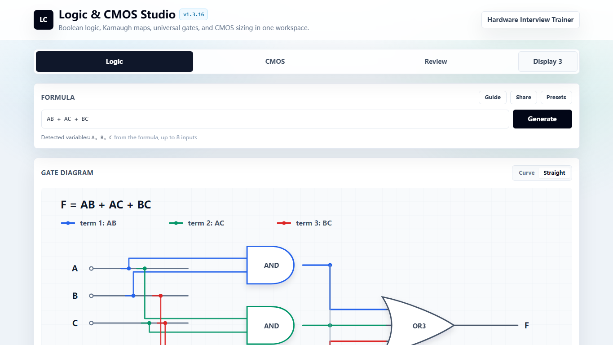

Logic & CMOS Studio
Browser tool for Boolean logic, truth tables, K-maps, simplified equations, Verilog, and static CMOS schematics.
- Connects Boolean simplification to implementation-level CMOS structure.
- Packages classroom logic workflows into one browser-based engineering tool.
Digital Logic
CMOS
Verilog